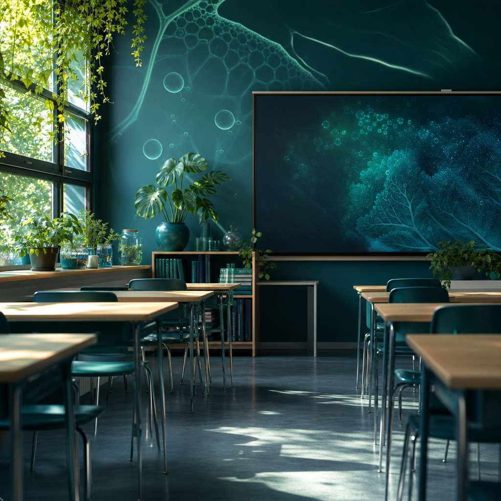
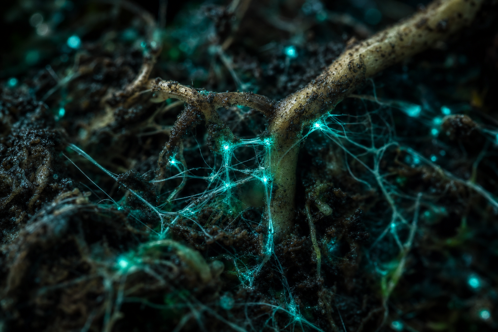
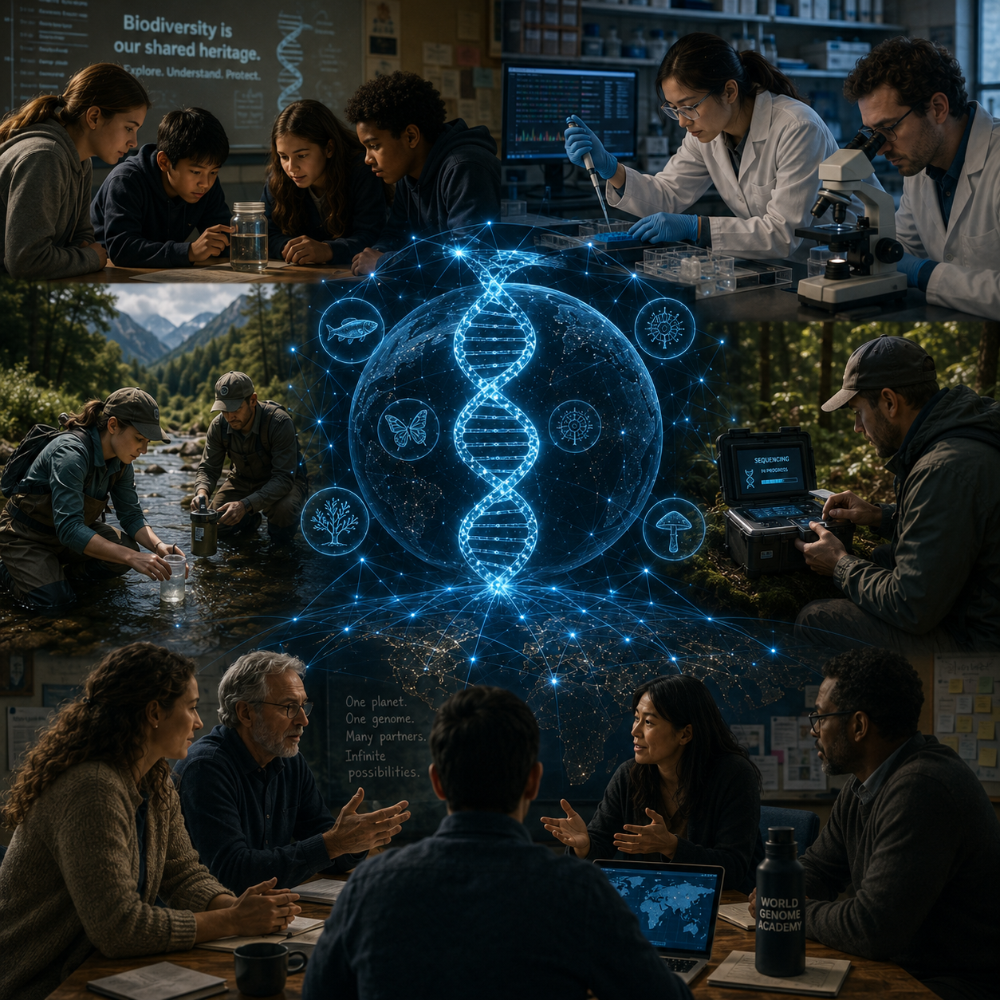
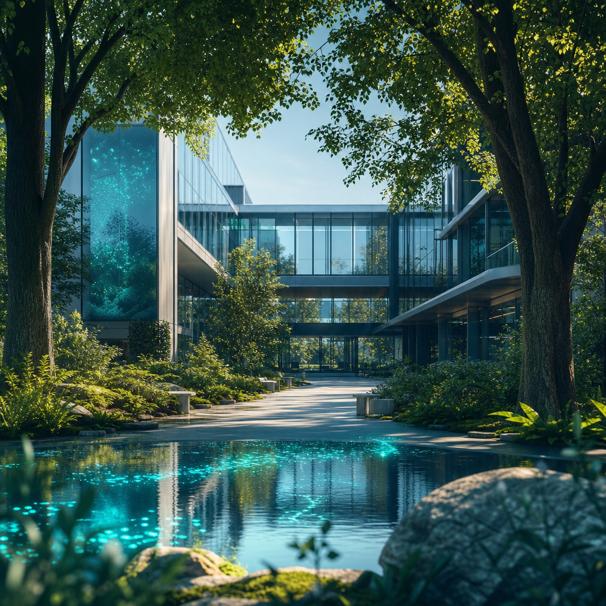
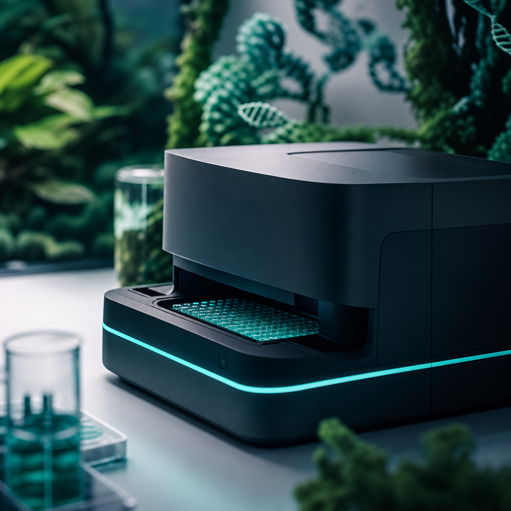
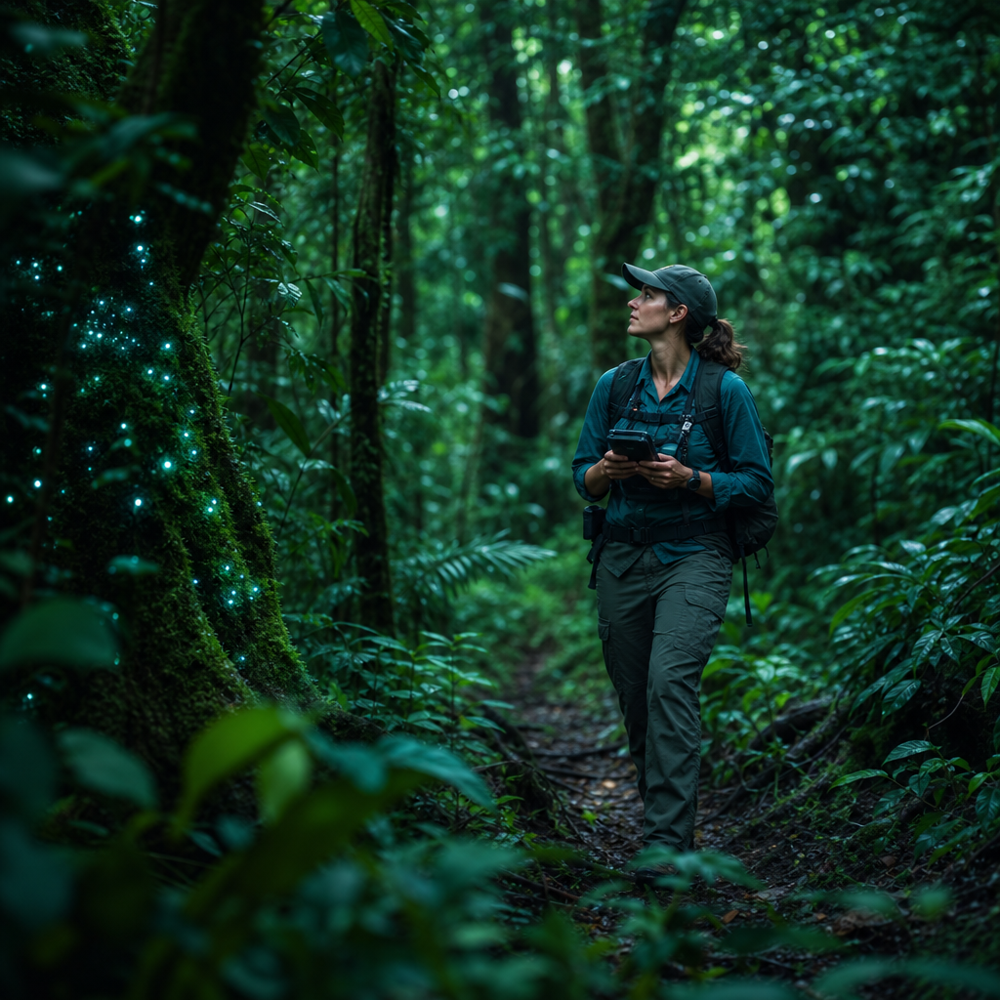
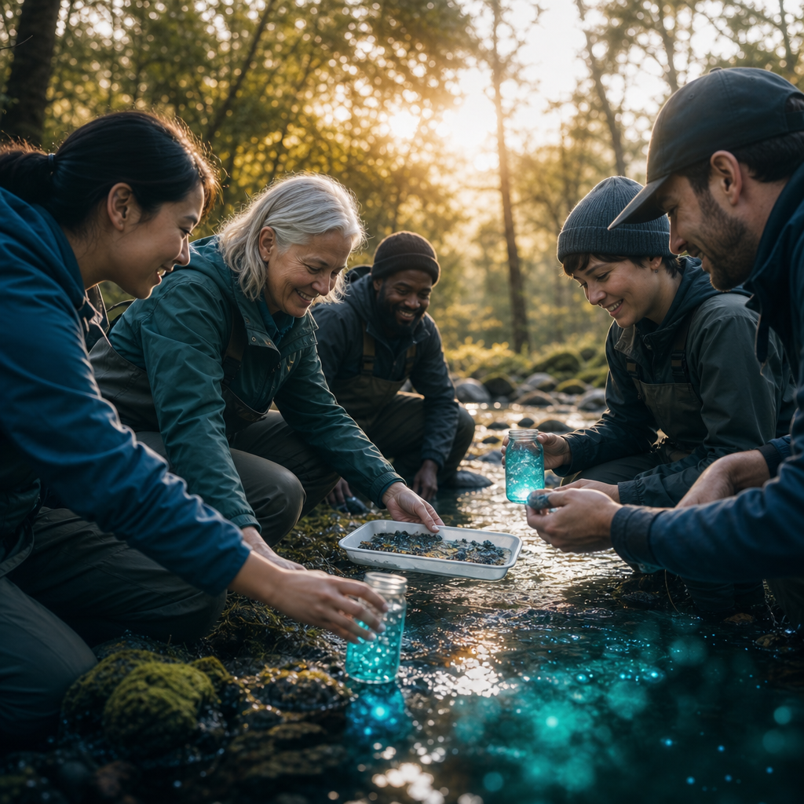

Schools
Primary and secondary classrooms host cohorts of student scientists, embedding eDNA fieldwork and sequencing into their local curriculum and seasons.

Partnerships
Genomic science reaches the classroom and the field only when many hands work together. We partner with schools, universities, researchers, technology companies, conservation groups, and the communities who know their ecosystems best.
A shared endeavour
No single institution can read the World Genome alone. The genetic record of life is too vast, too distributed, and too urgent. So we built World Genome Academy as a collaboration from the ground up, weaving together educators, scientists, and engineers around a common scientific framework.
Each partner brings something the others cannot: a classroom of curious students, a research lab, field-ready sequencing hardware, decades of conservation knowledge, or a deep relationship with a particular place. Together they turn a sample of water or soil into a discovery worth keeping, and become stewards of their environment.

Who we work with
From the institutions that train scientists to the communities that steward the land, every collaborator has a role in building a living record of Earth's biodiversity.

Primary and secondary classrooms host cohorts of student scientists, embedding eDNA fieldwork and sequencing into their local curriculum and seasons.

Academic departments lend rigour and mentorship, connecting school cohorts to graduate researchers, lab capacity, and peer-reviewed methods.
Working ecologists and genomicists guide study design, validate findings, and help students contribute data that stands up to scientific scrutiny.

Hardware and software partners make portable Oxford Nanopore sequencing affordable and classroom-ready, with tools that turn raw reads into readable biodiversity.

Land managers and conservation groups channel student findings into protection priorities, monitoring, and on-the-ground stewardship.

The people who live with an ecosystem anchor every cohort, sharing place-based knowledge and ensuring projects serve the places they study.
Start a partnership
Whether you lead a school, a lab, a company, or a community group, there is a place for you in the network. Tell us about your ecosystem and your goals, and we will design a cohort together.
Our model
Every partnership starts where the students stand. A class in Los Angeles reads the genome of the coastaline, students in Costa Rica sample water from a tide pool; a cohort in the Sacred Valley explores life in a mountain river. The ecosystem is theirs, and so is the discovery.
But the method is shared. Because every cohort collects, sequences, and reports the same way using the same tools and methodology, data collected across different ecosystems become comparable within a growing global atlas. Local roots, global canopy. That is how a single classroom helps assemble a record of life on Earth.